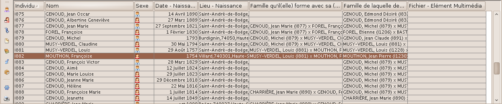
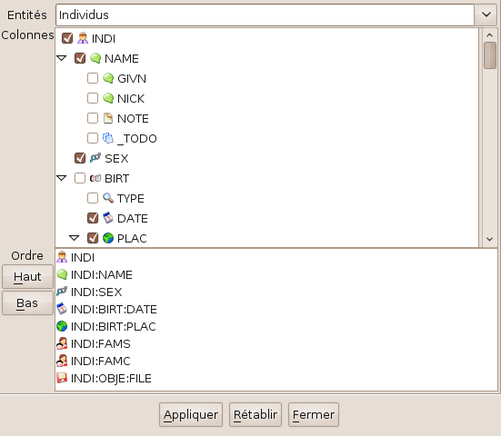

La vue Table

La table est la vue qui permet le mieux de lister et naviguer parmi la totalité des entités existantes dans votre fichier généalogique, dans toutes les possibilités de la norme
GEDCOM.br>
Des ascenseurs en bas et à droite permettent d'accéder à la totalité de la table.
Les différents types d'entités possibles sont :
- Individu
- Famille
- Objet multimédia
- Note
- Source
- Fournisseur d'information
- Lieu de stockage
Dans cette vue, chaque ligne représente une entité.
Pour chaque entité, il y a plusieurs colonnes : celles-ci affichent des informations de cette entité.
La liste peut être triée selon l'ordre chronologique ou alphabétique par un clic, ou ordre inverse par deuxième clic, sur la colonne sélectionnée.
Un triangle s'affiche sur la colonne sélectionnée; son orientation indique le sens du tri.
La sélection d'une famille ou individu dans cette fenêtre, met à jour les données affichées dans les autres fenêtres:
La sélection d'une entité d'un autre type dans cette fenêtre, met à jour les données affichées dans les fenêtres:
La spécificité du tri des colonnes alphabétiques est l'affichage sur la droite
de la liste alphabétique des lettres.
Un clic sur une lettre vous amènera sur la premiàre entité dont la
première lettre de l'information de la colonne est celle sélectionnée.
Cette vue permet d'utiliser le
menu contextuel
Ce menu est disponible par un clic droit sur une ligne.
Liste des différents outils disponibles dans le menu à droite:
Toutes les modifications apportées à cette liste peuvent être validées (bouton "appliquer") ou abandonnées (bouton "rétablir" ou directement "fermer").
- Les 7 premiers boutons sont les liens vers les listes des entités de chacun des 7 types listés précédemment
- Personnalisation des informations à afficher :
Pour chaque type d'entité, vous pouvez choisir les informations à afficher.
* Dans la partie haute, sont listées les informations pouvant être potentiellement affichées : cochez les cases à afficher dans la table.
Les diverses informations listées sont inscrites selon les étiquettes GEDCOM.
Même sans être expert de cette norme, vous pouvez tout de même vous y retrouver :
- certaines étiquettes sont assez intuitives (en anglais)
- les informations sont présentées indentées, les différentes propriétés se repèrent facilement
* Dans la partie basse, sont listées les informations sélectionnées pour être affichées :
La sélection est indiquée par son chemin.
(exemples : INDI:NAME : Noms et prénoms de l'individu, INDI:BIRT:DATE : Date de naissance de l'individu, etc... )
Sélectionnez une ligne, puis cliquez sur les boutons "haut" ou "bas" pour changer l'ordre d'affichage des informations sélectionnées.

- Impression :
- Onglet imprimante : prévisualisation de l'impression et lien vers le paramétrage de la qualité impression